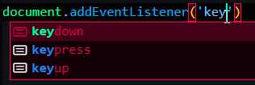

Keyboard Events is a global event
Because it does not happen on a single element

three typed of key event:
1. keydown happens as song as you press down the keyboard
2. keypress is fired continuously as we keep our finger on a certain key
3. keyup is when your finger left the keyborad

Coding this event will happen no matter what key you press.
And any time an event like this occurs js actually does in fact generate an object
Which contains all the information about the event itself
Then we can access it in the handler function


So if we access the key property of this event object

It wil give something back like this:

DONE